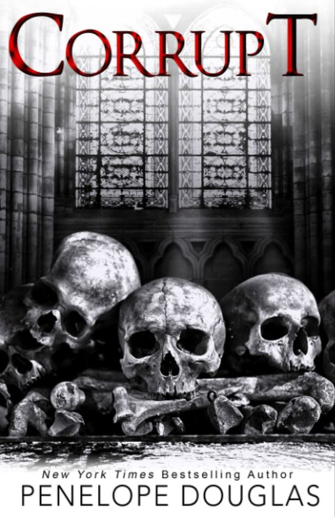
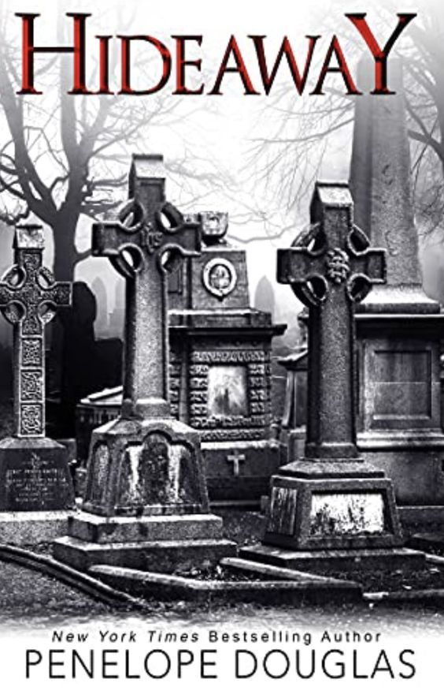
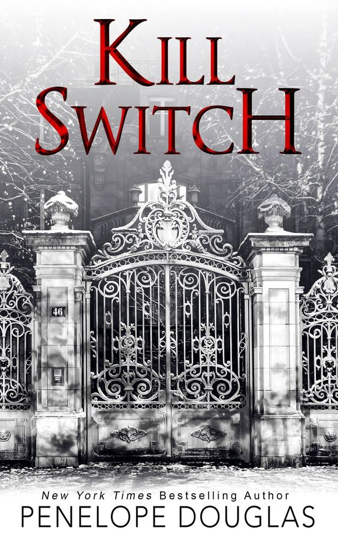
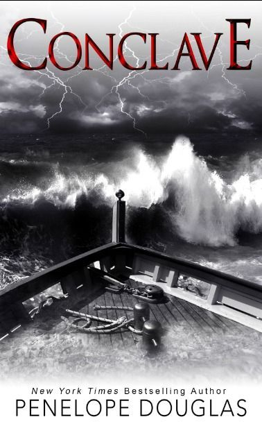
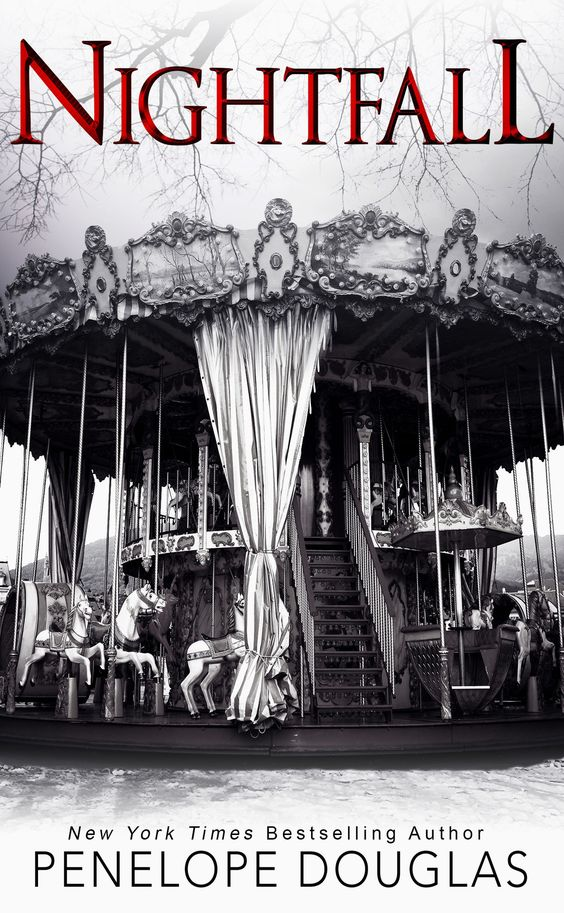
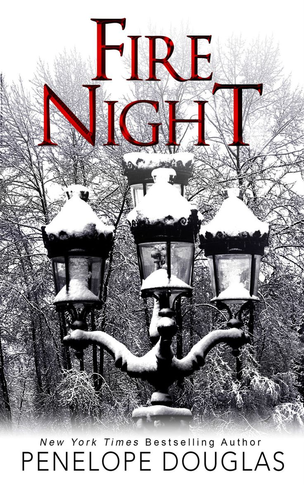

Corrupt 🤺
ERIKA FANE
Me disseram que os sonhos eram os desejos dos nossos corações. Meus pesadelos, no entanto, se tornaram minha obsessão.
O nome dele é Michael Crist.
O irmão mais velho do meu namorado é como um filme de terror que você espreita através de seus dedos para poder assistir. Ele é bonito, forte e completamente assustador. É a estrela do time de basquete do faculdade e agora se tornando profissional, ele é mais preocupado com a sujeira em seu sapato do que comigo.
Mas eu o notei.
Eu o vi. Eu o escutei. As coisas que ele fez, e as coisas que ele escondeu... Por anos, eu mordi minhas unhas, incapaz de desviar o olhar.
Agora, eu me formei no colégio e me mudei para a faculdade, mas não parei de observar o Michael. Ele é mau, e a sujeira que eu vi não quer ficar escondida na minha cabeça mais.
Porque ele finalmente me notou.
“ Porque ela? Porque apesar da minha mãe,
que sempre me amou, e meu amigos que sempre me
apoiaram, porque era Erika Fane quem colocava o
ar nos meus pulmões e fazia meu sangue esquentar.
Ela sempre teve esse feito em mim. Ela era o meu lar. ”
MICHAEL CRIST
Seu nome é Erika Fane, mas todos a chamam de Rika.
A namorada do meu irmão que cresceu na minha casa e sempre estava na nossa mesa de jantar. Ela sempre olha para baixo quando eu entro no local e fica paralisada quando eu me aproximo. Eu sempre consigo sentir o medo saindo de dentro dela, e apesar de não ter seu corpo, eu sei que tenho seus pensamentos. É tudo que eu quero, de qualquer maneira.
Até meu irmão partir para ser militar, e eu encontrar Rika sozinha na faculdade.
Na minha cidade.
Desprotegida.
A oportunidade é tão boa demais para ser verdade tanto quanto a hora certa. Porque, veja, três anos atrás ela colocou alguns amigos meus da escola na prisão, e agora eles saíram.
Nós esperamos. Fomos pacientes. E agora cada um de seus pesadelos se tornará realidade.
" Corra como você quiser, Pequeno Monstro. - disse ele, soando como uma ameaça. - Somos mais rápidos."

Hideaway 🥋
NIKOVA BANKS
BANKS
Imerso nas sombras da cidade, há um hotel chamado The Pope. Decadente, deserto e sombrio, encontra-se abandonado e rodeado por um mistério há muito esquecido.
Mas você acha que é verdadeira, não é, Kai Mori? A história a respeito do décimo segundo andar. O mistério que cerca o hóspede sombrio que nunca se registrou para entrar ou sair. Você acha que vou ajudá-lo a encontrar o refúgio secreto para chegar até ele, não é?
Você e seus amigos podem até tentar me assustar. Podem tentar me pressionar. Porque mesmo que eu lute para disfarçar o que sinto quando você olha pra mim — desde adolescente —, acredito que talvez o que está procurando esteja mais perto do que imagina.
Eu nunca vou traí-lo.
Então se prepare.
Na Devil’s Night, você será a caça.
"Você é um grande problema."
“Então, pare de se interessar.”
KAI MORI
Você não faz a menor ideia do que estou procurando, pequena. Você não sabe o que tive que fazer para sobreviver aos três anos na prisão, quando fui condenado por um crime que cometeria outra vez com o maior prazer.
Ninguém pode saber o que me tornei.
Eu quero aquele hotel, quero encontrá-lo e acabar logo com isso.
Quero minha vida de volta.
Mas quanto mais tempo passo ao seu lado, mais percebo que este novo eu é exatamente quem sempre fui destinado a ser.
Então pode vir, garotinha. Não se acovarde. Minha casa fica na colina. Existem muitas maneiras de entrar, mas apenas com sorte você conseguirá sair.
Eu vi o seu refúgio. Está na hora de você ver o meu.
" - Corra. Porque me torno uma pessoa muito diferente quando ninguém está olhando."
Kai desde o começo da série é descrito como o pilar da razão, o nobre, o mais confiável dos 4 Cavaleiros, mas depois de passar quase 3 anos na prisão, seu lado sombrio, aquele que ele apenas liberta nas noites da Devil’s Night, está vencendo a batalha.
Banks também tem uma coleção de traumas e abusos sofridos, mas a versão do Kai que ela tem agora não é mais a que ela conheceu e se apaixonou há 6 anos atrás e ele não tem intenção nenhuma de facilitar as coisas pra nossa garota.

Kill Switch ⛲
WINTER ASHBY
Mandá-lo para a prisão foi a pior coisa que eu poderia ter feito. Não importava que ele cometera o crime ou que eu desejasse que ele estivesse morto. Talvez eu achasse que teria tempo de desaparecer antes que ele saísse ou que ele fosse para a cadeia e se tornasse tudo menos o horror que ele era.
Mas eu estava errada. Três anos se passaram e foram muito rápidos, e agora ele é tudo, menos calmo. A prisão só lhe deu tempo para planejar.
E enquanto eu antecipava sua vingança, eu não esperava isso.
Ele não quer me machucar. Ele quer que tudo doa.
"Eu o odeio. Ele foi tudo de ruim que aconteceu comigo. Mas ele foi a única vez - além de dançar - que me senti viva também."
DAMON TORRANCE
Vamos começar do princípio. Livre-se do pai dela. Ele disse que eu a forcei. Ele contou que a garotinha era uma vítima, mas eu também era jovem e ela queria tanto quanto eu.
Passo dois... Dê a ela, a irmã e a mãe dela lugar nenhum para correr e nenhum combustível para escapar. As mulheres Ashby estão sozinhas agora e desesperadas por um cavaleiro de armadura brilhante.
Mas isso não é o que está vindo.
Não, é hora de ouvir meu pai e assumir o controle do meu futuro. Já é hora de mostrar a todos - minha família, a família dela, meus amigos - que nunca vou mudar e que não tenho outra ambição a não ser ser o pesadelo de suas vidas.
Começando com ela.
Ela vai ficar com tanto medo que nem estará segura em sua própria cabeça quando eu terminar com ela. E a melhor parte é que não precisarei invadir a casa dela para fazer isso.
Como o novo homem da casa eu tenho todas as chaves.
Depois do desaparecimento de Damon e seu confronto com os amigos no livro anterior. Ele decide que é a hora de por em prática sua vingança contra Winter. Que foi uma das pessoas mais responsáveis pela sua prisão a anos atrás.
"- Meu tipo de diversão tem um preço. - ele sussurra. - Melhor me divertir enquanto eu posso."

Conclave 🛥️
DAMON TORRANCE
Will se foi. Ele não é visto há meses, e as mensagens vindas de seu telefone são quase certamente falsas. Algo está errado. Precisamos agir agora.
Michael está pronto para derrubar The Cove, Rika está escondendo algo, Evans Crist é uma ameaça e o pai de Winter ainda está lá fora.
Todos estão em um milhão de direções diferentes e estamos vulneráveis.
É hora de reivindicar nosso lugar.
ERIKA FANE
Alguns anos atrás, eu nunca pensei que estaria aqui. A bordo do Pithom. Milhas ao mar. Numa mesa com Michael Crist, Kai Mori e Damon Torrance - homens que agora considero família.
Ficaremos trancados neste iate por quanto tempo for necessário para abordar nossa agenda e não sairemos até que tudo esteja esclarecido.
Até coisas sobre as quais não quero falar. Coisas que Michael não sabe.
Nós encontraremos Will. Solidificaremos nossos planos e removeremos quaisquer ameaças.
Se sobrevivermos ao Conclave.
────────────────────────────────────────────────────────────────────────────────────────
Damon continua possessivo, ciumento, e amando Winter com
todas as forças. Ele trabalha como um louco no seu negócio
de construção e designer enquanto a Winter continua dançando
e fazendo apresentações de balé. No início já vemos que ele
tem um filho pequeno e que Damon conquistou um bom relacionamento
com Rika, que recentemente descobriu ser sua irmã.
(mesmo depois de tudo o que ele fez de ruim para ela).
Já Rika, está com muitos problemas para resolver em sua própria vida.
Ela está sob comando de papeis que exigem muita responsabilidade,
e ela ainda é muito nova, uma dessas responsabilidades é ser prefeita
da cidade. E logo no início já da para perceber que ela e Michael não
estão bem por algum motivo oculto que eles ainda precisam discutir.
Com o sumiço de Will a mais de um ano, todos estão preocupados
que ele tenha sido afastado da cidade a força, e não porque precisava
de um tempo. Então Damon sugere a Rika, que eles precisam sentar em um
lugar e fazer uma Conclave (que é basicamente quando os cardeais se
trancam em uma sala e só saem quando decidem o novo papa) para expor
todos os problemas e decidirem como vão agir a partir dai.

Nighfall 🎡
EMORY SCOTT
Eles o chamam de Blackchurch. Uma mansão isolada em um local remoto e não revelado, onde os ricos e poderosos enviam seus filhos mal comportados para se refrescarem de olhos curiosos.
Will Grayson sempre foi um animal, no entanto. Imprudente, selvagem e alguém que nunca foi limitado por uma única regra a não ser fazer exatamente o que queria. De jeito nenhum seu avô iria arriscar que ele humilhasse a família novamente.
Não que a última vez tenha sido inteiramente culpa dele. Ele pode ter gostado de me colocar em dificuldades na escola quando ninguém estava olhando, então eles não perceberiam isso O Sr. Popular realmente queria um pedaço daquela pequena nerd quieta que ele tanto amava torturar, mas ...
Ele também poderia ser quente. E feroz em me manter segura. A verdade é ...
Ele tem o direito de me odiar. É tudo culpa minha. Tudo. Noite do diabo. Os vídeos. As prisões. Eu sou a culpada por tudo isso. E não me arrependo de nada.
Will Grayson III
Nunca me importei em ficar preso. Eu aprendi há muito tempo que ser tratado como um animal dá permissão para agir como um. Ninguém nunca olhou para mim de outra maneira.
O único erro deles é acreditar que tudo o que faço é um acidente. Eu posso sentar nesta casa sem Internet, televisão, bebida ou garotas, mas vou sair daqui com algo muito mais assustador para meus inimigos.
Um plano.
E uma nova matilha de lobos.
Eu só não esperava que um dos meus inimigos viesse até mim.
Não sei quem a trouxe clandestinamente ou se pretendiam deixá-la aqui, mas posso sentir o cheiro dela escondida na casa. Ela está aqui.
E quando a equipe de segurança deixa os suprimentos, os portões se fecham e a porta da minha gaiola dourada se abre, dando-me as rédeas da casa e do terreno por mais um mês sem supervisão, lembro-me com um sorriso...
Blackchurch abriga cinco prisioneiros. Eu sou apenas um de seus problemas.
Nos livros anteriores, já podíamos ver que Will era apaixonado por Emory, e que eles nunca chegaram a ficar juntos, dando algumas indicações de que ela não o quis. O livro vai intercalar passado e presente, contando como eles se conheceram, e como se tornaram inimigos.
Atualmente Will está em Blackchurch, que é uma prisão em um lugar remoto, onde os ricos mandam seus filhos problemáticos ou criminosos para impedi-los de causar problemas a família e suas reputações. E é nesse lugar, que Emory acorda um dia, descobrindo então que apenas uma vez por mês uma equipe de limpeza vem no lugar reabastecer a dispensa, e que ela está presa nesse lugar abandonado com Will (que a odeia) e com outros homens que podem ser muito perigosos.
Conforme o presente vai se intercalando com o passado dos dois, é possivel ver como Emory sofria abusos na mão do irmão, e que Will por mais que se esforçasse para ter uma chance de se aproximar de Emory, ela não tinha confiança em ninguém, e nem queria envolvê-lo no inferno que era a sua vida naquele momento. E apesar de Emmy sentir que ele trazia paz e momentos de alivio em meio a tempestade, tinha medo que fosse apenas mais um jogo para ele, e sua vida já era complicada o suficiente para abrir o coração e ser decepcionada dessa forma.
QUOTES
"QUEREMOS O QUE QUEREMOS"
"Você me apoia, você está ao meu lado, ou você está no meu caminho, seja Lilith, nunca Eva."
"Eu sou o olho da tempestade."
"Viva por seu amor, ame sua vida e levante o inferno".
"Eu me apaixonei por Emory desde o momento em que coloquei os olhos nela, quando eu tinha 14 anos.
Ela estava sempre sozinha. Mas não deveria, porque ela deveria estar comigo."

Fire Night 🕓
O relógio em St.Killian soa enquanto susurros flutua acima na escada escura acima.
A neve cai do céu negro além das janelas e as velas brilham, as chamas iluminando a noite mais longa do ano.
A Noite do Diabo não é o único feriado que celebramos. Esta noite, vamos colocar uma máscara diferente.
Alguns chamam de solstício de inverno.
Outros de Yule.
Chamamos de Noite do Fogo.
“Sentirei para sempre, mas precisava que você soubesse que te amo”, disse ela. “Sempre tive, e tem mais um presente debaixo daquela árvore lá fora que aquelas crianças lindas não podem ter, porque sempre foi seu. Você pode abri-lo depois que eu sair ou nunca mais, mas eu precisava entregá-lo a você.”
────────────────────────────────────────────────────────────────────────────────────────
── Você me apoia, ── disse Michael.
── Você está ao meu lado, ── continou Kai.
── Ou você está no meu caminho, ── o restante terminou.
── Seja Lilith ── disseram as meninas.
Athos puxou a Morte Vermelha sobre os olhos, todos partindo enquanto ela sussurava.
── Nunca Eva.
FIM